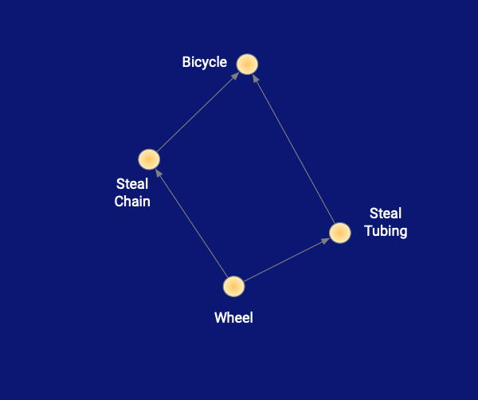
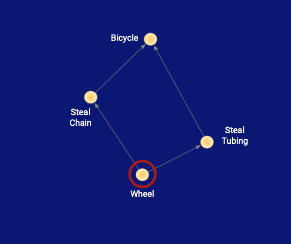
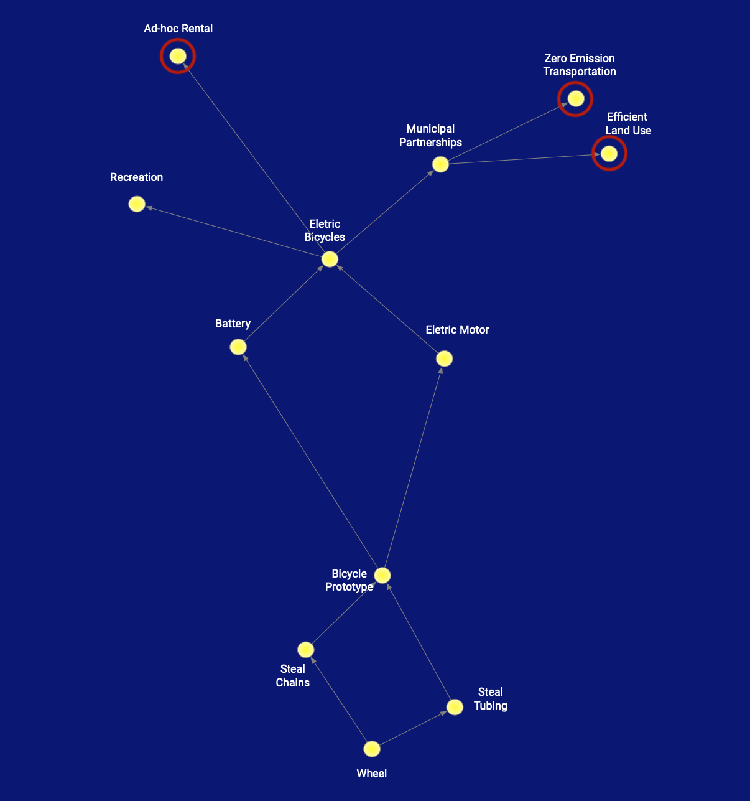
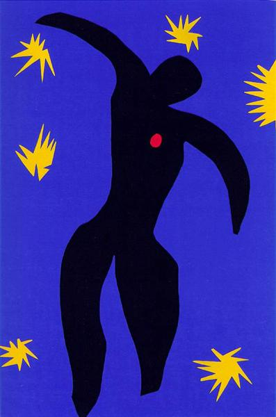
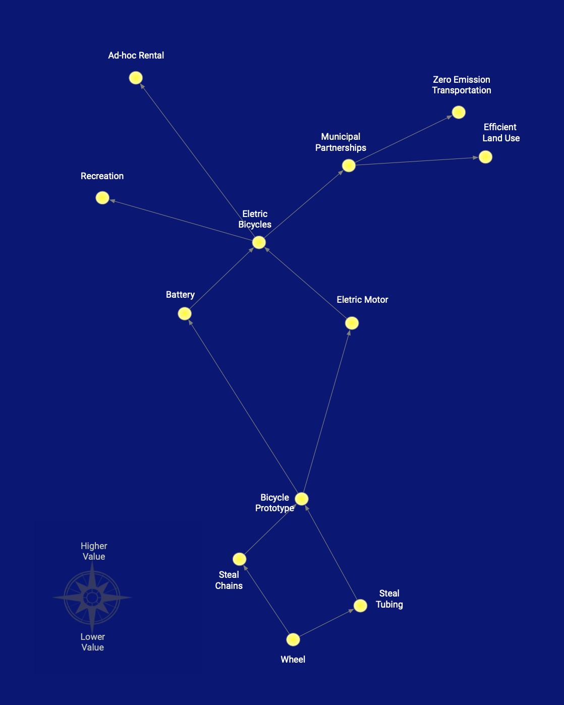
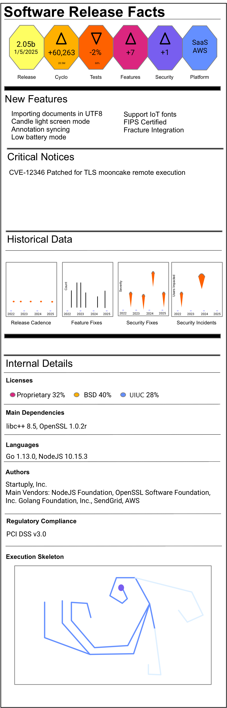

A constellation DAG can be thought of as way to share the thought process that everyone already
reasons through before making roadmaps or plans in general.
The key difference between a constellation DAG and simply structuring tasks and ideas onto a graph
is that the nodes don’t need to represent one type of data, but can be a milestone, a vague
general goal, or simply a task. This fluid mixing of concepts better represents the direct mental
model everyone uses already.

The constellation is reminiscent of laying out under the expanse of stars on a clear night and
letting one’s mind wander a bit, but not too much. Along with a slight haphazardness in the
placement of the points further evokes a sense that we’re looking something that’s imprecise,
but still in the direction we want to go.

At the base of the graph we start with what is near and more known ideas, a feature, product
or maybe just a core idea we want to build on to create higher levels of value.

Next as we go up in the sky, we build on the base adding point by answering the question What
do we need next? With allowing for more vagueness as we go up in the sky as the value goes up.

Lastly the colors are important, with a dark blue sky contrasted with bold yellow pin points of
light we show that this is a night sky free of distractions using Henri Matisse’s Icarus as
inspiration. We use red to focus the readers attention on the points we are discussing.

And our final look, from which we can then plan out a roadmap with an overall awareness of
our direction and options.
In order to improve the quality of software, the Software Release Facts label exposes quality metrics to end consumers, so they can make informed decisions, and aligns software vendors’ incentives with making quality software.

At the top level, all problems can be reduced to one of two classes of questions:
Where 1 can be thought as the forward view, and 2 the backward disambiguation (and 2 is probably less NP hard).
It follows then that 1 is not solved if 2 can’t be solved, since the solution to 1 will become the problem in 2 at a later time.
Which further follows that the true solution is the continuous and unbroken understanding of the constituents, and the apparent forward solution is just a byproduct of understanding.